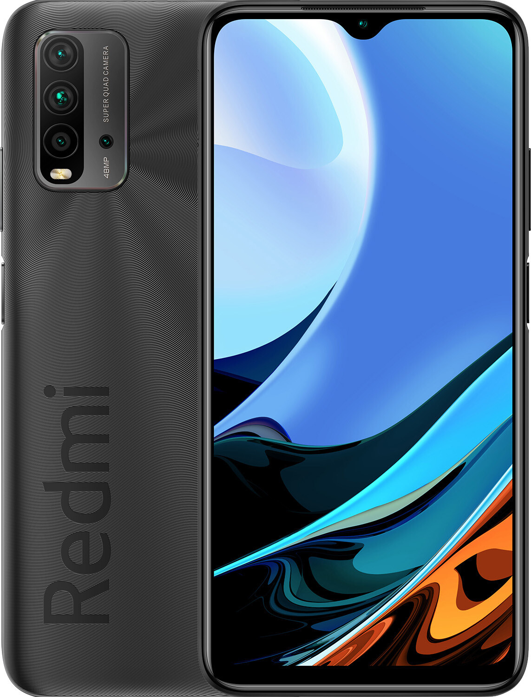
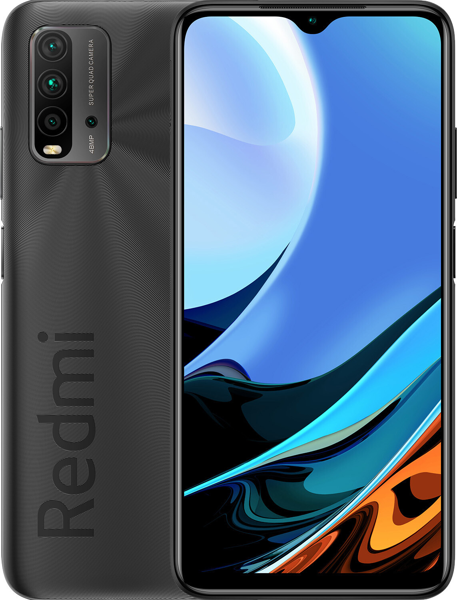

Мій смартфон
 Мій телефон, яким я зараз користуюся, називається Xiaomi Redmi 9T. Придбав я його у кінці жовтня 2021 року на заміну втраченому Xiaomi Redmi Note 4. Під час вибору я хотів придбати такий пристрій, який за графічним інтерфесом більш-менш подібний до мого попередника. Подивився на параметри, оцінив зовнішній вигляд, почитав відгуки. І врешті-решт зрозумів, що смартфон Xiaomi Redmi 9T саме те, що потрібно мені. Нижче наведені основні характеристики мого смартфона:
Недліків якихось я не помітив за півроку експлуатації смартфона. Тож, планую ним користуватися і далі.
 Мій телефон, яким я зараз користуюся, називається Xiaomi Redmi 9T. Придбав я його у кінці жовтня 2021 року на заміну втраченому Xiaomi Redmi Note 4. Під час вибору я хотів придбати такий пристрій, який за графічним інтерфесом більш-менш подібний до мого попередника. Подивився на параметри, оцінив зовнішній вигляд, почитав відгуки. І врешті-решт зрозумів, що смартфон Xiaomi Redmi 9T саме те, що потрібно мені. Нижче наведені основні характеристики мого смартфона:
- Кількість sim-карт: 2 SIM
- Формат SIM-карти: Nano-SIM
- Стандарти зв'язку: GSM, 3G, 4G (LTE)
- Діагональ екрану: 6.53'
- Роздільна здатніст дисплею: 2340х1080
- Тип екрану: IPS
- Процесор: Qualcomm Snapdragon 662
- Кількість ядер: 8
- Частота процесора: 2 ГГц
- Графічний процесор: Adreno 610
- Внутрішня пам'ять: 64 ГБ
- Оперативна пам'ять: 4 ГБ
- Розширення внутрішньої пам'яті: до 512 ГБ (Micro SD)
- Камера: 48 Мп + 8 Мп + 2 Мп + 2 Мп
- Ємність акумулятора: 6000 mAh
Недліків якихось я не помітив за півроку експлуатації смартфона. Тож, планую ним користуватися і далі.